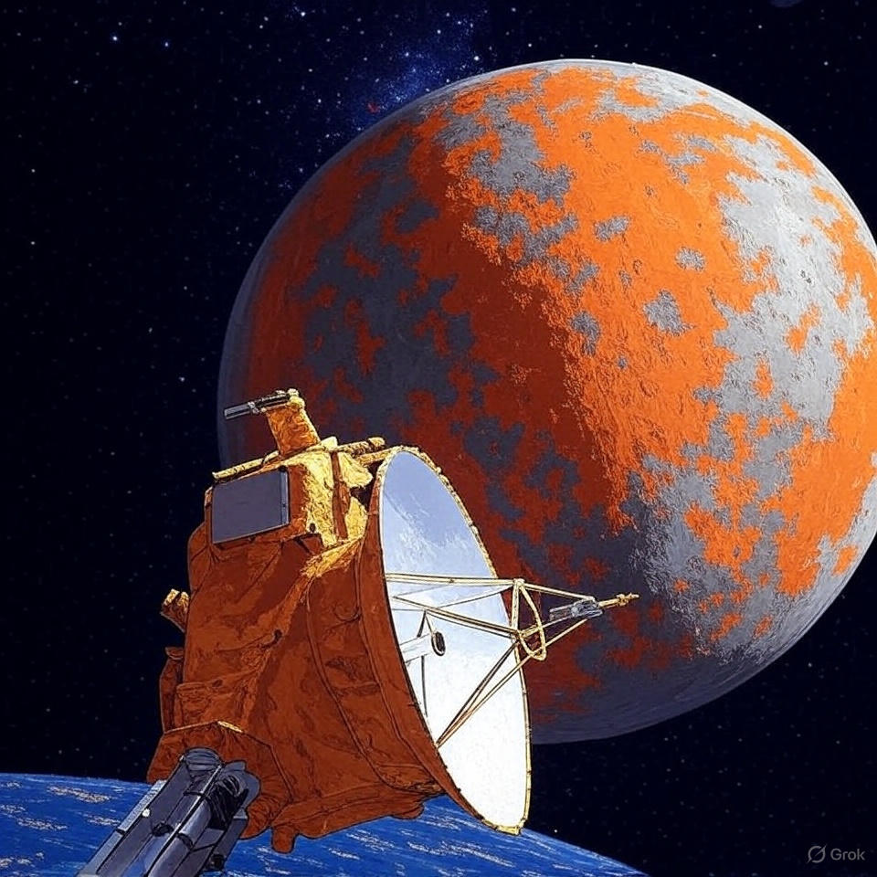
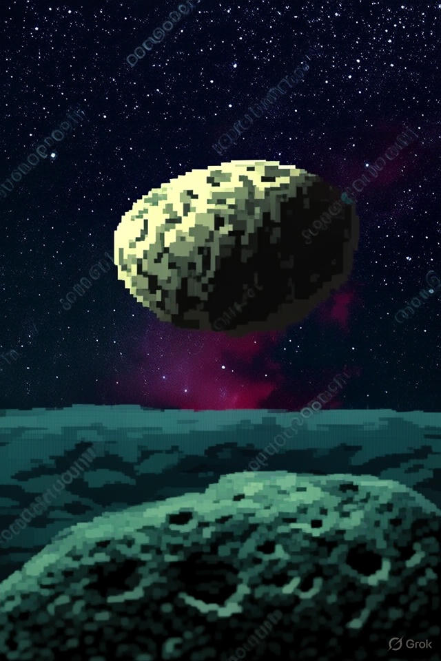
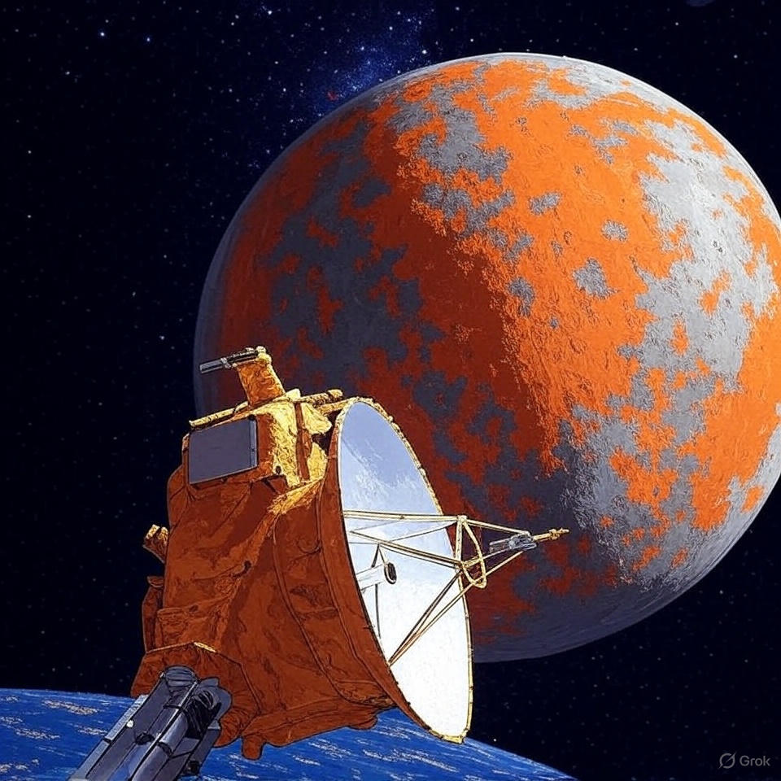
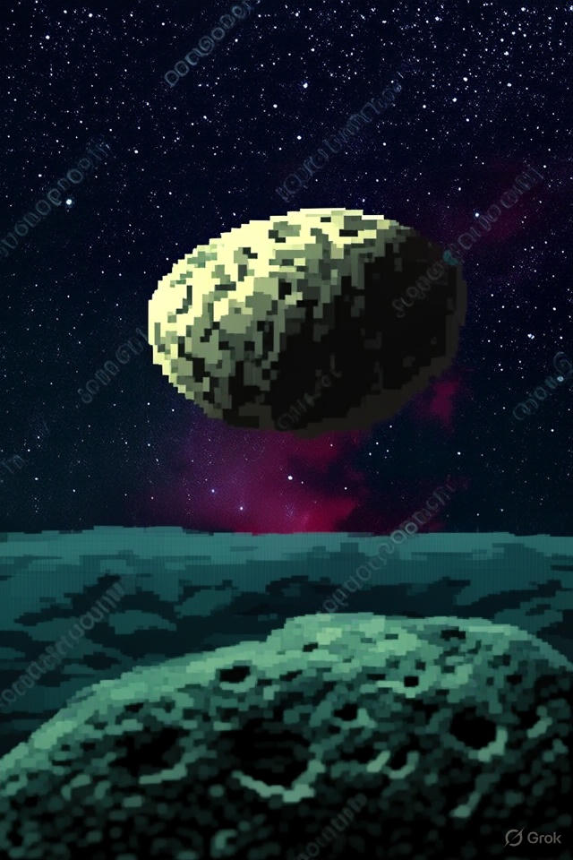
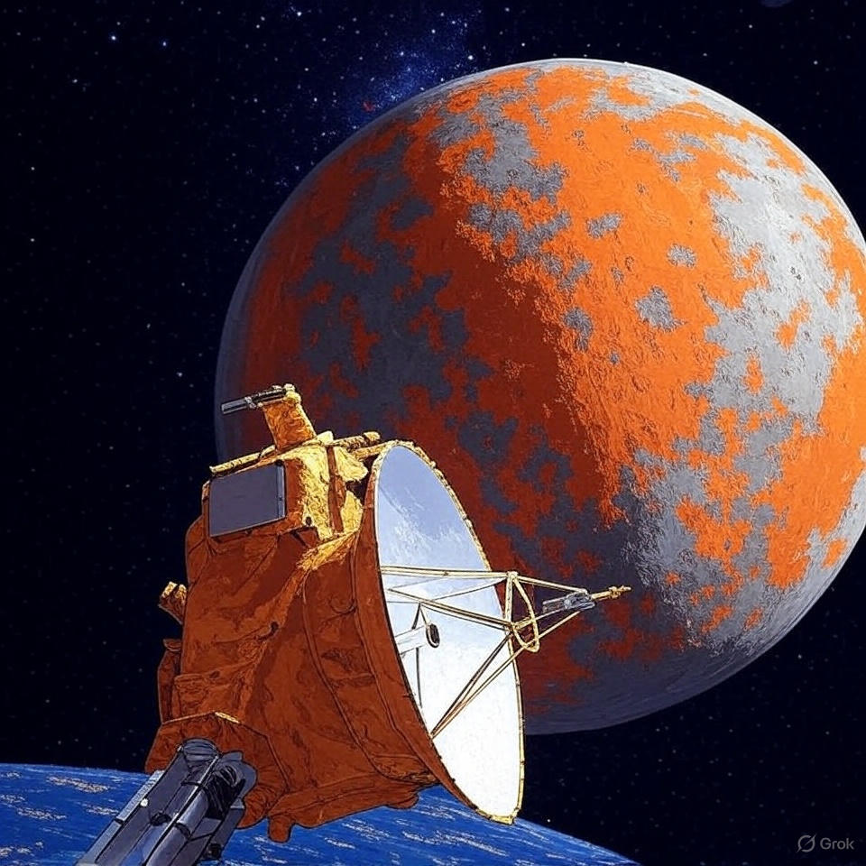
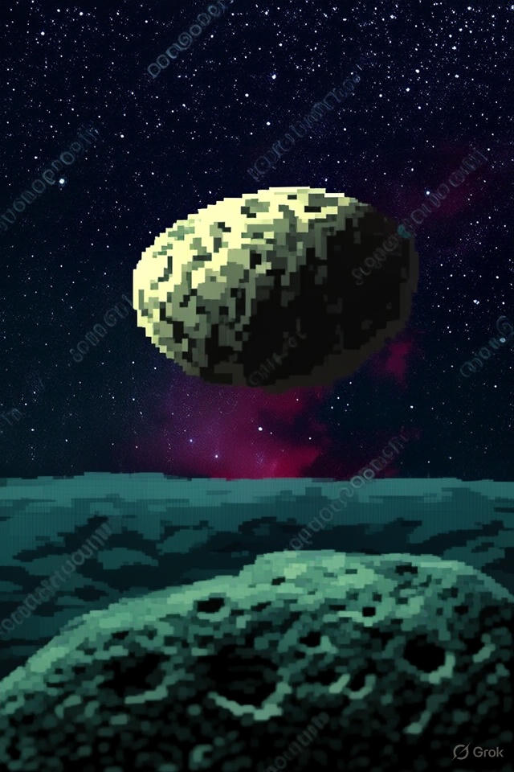

Type: Dwarf planet (Kuiper Belt)
Approx. dimensions: ~2,320 × 1,700 × 1,080 km (elongated)
Mass: ~0.006× Earth’s mass
Moons: 2 (Hiʻiaka, Namaka)
Length of day: ≈ 3.9 hours (very fast)
Length of year: ≈ 284 Earth years
Distance from Sun: ~6.4–50 AU (varies)
Average temperature: ≈ −240°C
Composition: Rock and water-ice crust
Haumea has an unusual elongated shape due to very rapid rotation, which has also produced a ring and two moons. Its surface is covered in crystalline water ice and appears relatively bright.
Haumea has been studied via telescopes from Earth and space; observations revealed its rapid spin, moons, and ring. There are no spacecraft visits to date.
No missions to Haumea are planned at the moment; interest remains for future Kuiper Belt exploration to better understand its origin and rapid rotation.

